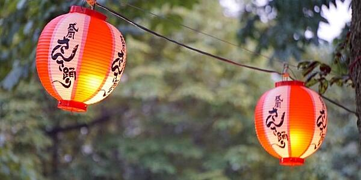
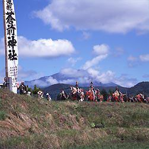
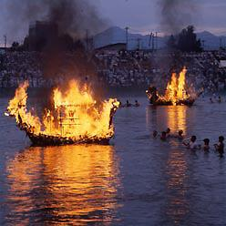

伝統行事
さんさ祭り

その昔、悪い鬼が現れて里人を苦しめました。それをとらえて懲らしめたのが三ツ石の神。鬼はもうここには来ないことを誓い、岩に手形を残して逃げていきました。
不来方､岩手の地名の起こりです。里人は喜んで三ツ石の周りをさんささんさと踊り、これがさんさ踊りとなりました。盛岡地方に古くから伝わるさんさ踊りを誰にでも踊れるよ。
今ではすっかり岩手を代表する祭りとなりました。日本一といわれる５０００台の太鼓が鳴り響く様子はまさに壮観です。
チャグチャグ馬コ

農耕馬に感謝する伝統行事。色鮮やかな装束で着飾った馬と馬主は早朝、蒼前神社に参拝し、盛岡八幡宮まで約5時間かけて行進する。前日はチャ
グチャグ馬コ祭りで賑わう。 1978年（昭和５３年）、国の無形民俗文化財に選定。また平成8年には環境庁（現環境省）の「残したい日本の音風
景百選」に選ばれた。
船ッコ流し

提灯や盆の供物で飾った舟に火を放ち、川に流す。祖先の霊を送り、無病息災を祈る送り盆の行事である。
チャグチャグ馬コは、南部曲がり家に代表される「愛馬精神」から生まれた。まだ馬が農作業 に使われて
いた頃、農繁期の中で、 唯一の休息日として設けられた行事が今に伝わってる。また、チャグチャグ馬コに
付けられる「小荷駄装束」は大名行列の名残で、歴史が今に息づいている行事である。